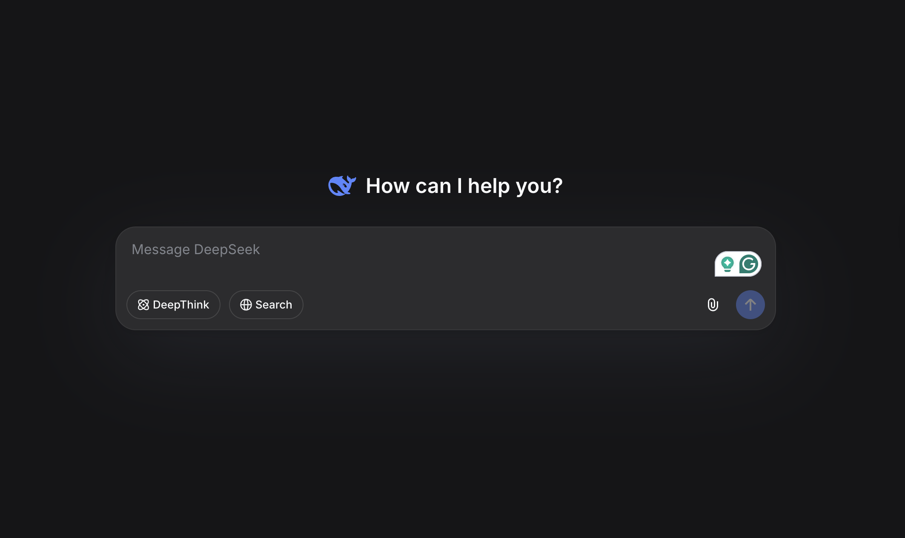

Hello! I'm DeepSeek, an AI assistant created by DeepSeek Company. 😊
I'm a text-based AI model designed to be helpful, harmless, and honest. I can assist with a wide variety of tasks like:
- Answering questions and explaining concepts
- Helping with writing, analysis, and problem-solving
- Coding and technical assistance
- Creative tasks like brainstorming and content creation
- Reading and analyzing uploaded files (images, PDFs, Word docs, Excel sheets, etc.)
Some key things about me:
- I'm completely **free to use** with no charges
- I have a 128K context window, so I can handle long conversations and documents
- I support web search functionality (though you need to manually enable it)
- I'm available via web interface and through an official app
- I'm purely text-based and don't generate images or speech
My knowledge cutoff is July 2024, and I'm here to help with whatever questions or tasks you might have! Is there anything specific you'd like to know or need help with today? 🌟Exploring Deepseek
Deepseek
This blog is about my first experience with deepseek
Background:
DeepSeek (often styled DeepSeek AI or 深度求索) is an AI research company founded in 2023 and based in Hangzhou, China. It is backed primarily by the hedge fund High-Flyer Capital and concentrates on foundational language models rather than consumer products.
Experience:
The initial interface was very similar to GPT or Claude:

Who Are You?
The first question I had for Deepseek was “Who are you?” and this is what Deepseek returned me:
The conversation style was a little different from Claude and GPT which is not suprising given it was trained in China. One thing I found interesting was that the models knowledge was cut off in July 2024. I asked it why that was
here was the response:
Great question! The knowledge cutoff for AI models like me is a common design choice that typically has a few key reasons:
## **Technical & Practical Reasons:**
1. **Training efficiency** - It takes significant time and computational resources to continuously retrain models on new data. Periodic updates are more practical than real-time training.
2. **Quality control** - Training data needs to be carefully curated, cleaned, and processed. Streaming live data could introduce more noise, biases, or problematic content.
3. **Model stability** - Freezing knowledge at a certain point helps create a stable, consistent version that can be thoroughly tested and evaluated.
## **Safety & Reliability:**
4. **Verification challenges** - Recent information might not have been fact-checked or verified as thoroughly as older, well-established knowledge.
5. **Avoiding speculation** - For very recent events, information might be incomplete, contradictory, or rapidly changing, which could lead to inaccurate responses.
## **Business & Development Cycle:**
6. **Version management** - Creating discrete versions with specific cutoff dates helps track improvements and manage updates systematically.
7. **Planning for updates** - Companies typically work on major model updates periodically rather than continuous training.
---
**The good news:** While my core knowledge stops at July 2024, I can still help with current events through my **web search feature** (if you enable it in the interface). This allows me to fetch up-to-date information when needed! 🔍
DeepSeek periodically releases updated versions, so future iterations will likely have more recent knowledge cutoffs. Is there something recent you're curious about that I might be able to help with using web search?Cell In[1], line 22 **The good news:** While my core knowledge stops at July 2024, I can still help with current events through my **web search feature** (if you enable it in the interface). This allows me to fetch up-to-date information when needed! 🔍 ^ SyntaxError: invalid character '🔍' (U+1F50D)
I was wondering if Deepseek was hiding the fact that its knowledge may have been cut off becasue it was trained in China, So I asked it that.
Here is Deepseeks response:
That's a really interesting question, but no — the knowledge cutoff isn't specifically because I was developed in China. **The practice of having a knowledge cutoff is actually universal across AI models worldwide**, regardless of where they're developed.
Here’s why:
1. **Common Industry Practice**
Models like GPT (from the US), Claude (Anthropic, US), and Gemini (Google, US) all have similar knowledge cutoffs. They are periodically updated, not continuously trained in real time.
2. **Technical and Practical Reasons**
Training large AI models is an intensive, time-consuming process that requires massive computational power. Once trained, a model is “frozen” until the next version is prepared — this helps ensure stability, reliability, and safety. Continuous real-time training would be impractical and risky from a quality-control perspective.
3. **Safety and Alignment**
Freezing knowledge at a certain date allows developers to evaluate and align the model’s responses thoroughly, rather than dealing with constantly shifting, unverified, or potentially misleading new information.
4. **Regulatory and Compliance Considerations**
All countries, including China, the US, and the EU, have regulations and guidelines that affect AI training data — such as copyright, privacy (GDPR, PIPL), and content moderation laws. These can influence what data is used and when.
---
So while my training data and development context are influenced by Chinese laws, regulations, and multilingual datasets (including Chinese and English sources), **the knowledge cutoff itself is a technical and industry-standard choice**, not a location-based one. 🌍
If you’d like more recent information, you can enable my **web search** feature — I can then look up real-time info for you!Cell In[3], line 1 That's a really interesting question, but no — the knowledge cutoff isn't specifically because I was developed in China. **The practice of having a knowledge cutoff is actually universal across AI models worldwide**, regardless of where they're developed. ^ SyntaxError: unterminated string literal (detected at line 1)
I then moved on from the political concerns of its training and asked how Deepseek was trained.
Here is what Deepseek responded:
Thanks for asking — I’d be happy to walk you through how AI models like me are generally trained (keeping in mind that I don’t have access to DeepSeek’s proprietary internal training details, but I can explain the typical process in the field).
## 📚 **Typical Training Process for Large Language Models**
### 1. **Data Collection**
- Huge amounts of **text data** from publicly available sources: books, articles, websites, academic papers, code repositories (like GitHub), forums, and more.
- Data is filtered to remove low-quality, toxic, or duplicated content.
- Multilingual datasets are often included if the model is intended to be multilingual.
### 2. **Preprocessing & Cleaning**
- Text is cleaned, normalized, and tokenized (broken into smaller units like words or subwords).
- Personal identifiable information (PII) is usually removed to protect privacy.
- Special attention is given to balancing topics, languages, and sources to reduce bias.
### 3. **Training Stages**
#### ✅ **a. Pre-training (Unsupervised Learning)**
- The model learns to **predict the next word** in a sequence.
- This builds a broad understanding of grammar, facts, reasoning patterns, and world knowledge.
- Done on massive datasets using thousands of GPUs/TPUs over weeks or months.
#### ✅ **b. Fine-tuning (Supervised Learning)**
- The model is further trained on **high-quality, human-generated examples** of desired interactions (like question-answering, instruction-following).
- This teaches it to be helpful, accurate, and aligned with human intentions.
#### ✅ **c. Reinforcement Learning from Human Feedback (RLHF)**
- Humans rank different model responses.
- A reward model is trained based on these rankings.
- The main model is optimized to produce responses that get higher rewards (more helpful, harmless, honest).
---
## 🌐 **DeepSeek-Specific Points (From Public Info)**
- Developed by **DeepSeek Company**, based in China.
- Trained on **large-scale, multilingual datasets**, with significant Chinese and English coverage.
- Uses **Mixture of Experts (MoE)** architecture in some versions (efficient, scalable).
- Emphasizes **strong reasoning and coding capabilities**, alongside general knowledge.
---
## 🧠 **Ethics & Safety During Training**
- Content filtering to avoid harmful, biased, or illegal outputs.
- Alignment with regulations (e.g., China’s AI ethics guidelines, international standards).
- Continuous evaluation on safety, fairness, and usefulness benchmarks.
---
### 🔍 **If You’re Curious About More Specifics:**
- For exact dataset details, model size, or training duration, you might check DeepSeek’s official research papers or technical reports (if published).
- Many of these choices (like architecture and training data mix) affect model performance in different languages and tasks.
Would you like me to elaborate on any particular part — like tokenization, reinforcement learning, or how safety filtering works? 😊Cell In[4], line 1 Thanks for asking — I’d be happy to walk you through how AI models like me are generally trained (keeping in mind that I don’t have access to DeepSeek’s proprietary internal training details, but I can explain the typical process in the field). ^ SyntaxError: invalid character '—' (U+2014)
Analysis:
The responses of deepseek were eairly similar to GPT in it’s stylistic choices and syntax. Which I found odd given that Claude, Gemini and GPT are all distinct in their stylisitic features. I found the way Deepseek responded to my political questions interesting. Overall I probably would not use this LLM due to data concerns but the experience was enjoyable none the less.